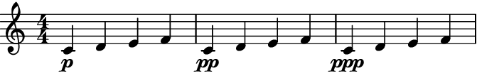
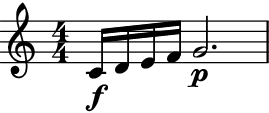
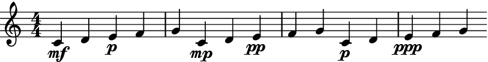

Echoer
- class auxjad.Echoer(contents: Container, *, min_dynamic: Dynamic | str = 'ppp', max_steps: int = 1, repetition_chance: float = 0.0, process_on_first_call: bool = False, disable_rewrite_meter: bool = False, omit_time_signatures: bool = False, use_multimeasure_rests: bool = True, boundary_depth: int | None = None, maximum_dot_count: int | None = None, rewrite_tuplets: bool = True, include_empty_measures: bool = True, prettify_rewrite_meter: bool = True, extract_trivial_tuplets: bool = True, fuse_across_groups_of_beats: bool = True, fuse_quadruple_meter: bool = True, fuse_triple_meter: bool = True)[source]
Takes an
abjad.Container(or child class) as input and, using it as reference, gradually lowers all dynamics, removing notes that are below a given threshold, returning the output as anabjad.Selection.- Basic usage:
Calling the object will return an
abjad.Selectiongenerated by the echoing process. Each call of the object will apply the echoing process to the previous result. By default, the container will be faded out (that is, its notes will be gradually removed one by one). Note that, by default, the first call in fade out mode outputs the initial container, with subsequent calls replacing leaves for rests.>>> container = abjad.Container(r"c'4\mf d'4\mp e'\p f'\pp") >>> abjad.show(container)

>>> echoer = auxjad.Echoer(container) >>> notes = echoer() >>> staff = abjad.Staff(notes) >>> abjad.show(staff)

>>> notes = echoer() >>> staff = abjad.Staff(notes) >>> abjad.show(staff)
>>> notes = echoer() >>> staff = abjad.Staff(notes) >>> abjad.show(staff)
The property
current_windowcan be used to access the current window without processing it.>>> notes = echoer.current_window() >>> staff = abjad.Staff(notes) >>> abjad.show(staff)

process_on_first_call:The very first call will output the input container without processing it. To disable this behaviour and apply the echoing process on the very first call, initialise the class with the keyword argument
process_on_first_callset toTrue.>>> container = abjad.Container(r"c'4\mf d'4\mp e'\p f'\pp") >>> echoer = auxjad.Echoer(container, ... process_on_first_call=True, ... ) >>> notes = echoer() >>> staff = abjad.Staff(notes) >>> abjad.show(staff)

min_dynamic:The threshold dynamic used to remove softer notes during each iteration of the process is set by
min_dynamic.>>> container = abjad.Container(r"c'4\f d'4 e'4 f'4") >>> echoer = auxjad.Echoer(container, ... min_dynamic='mp', ... ) >>> notes = echoer() >>> staff = abjad.Staff(notes) >>> abjad.show(staff)

>>> notes = echoer() >>> staff = abjad.Staff(notes) >>> abjad.show(staff)
>>> notes = echoer() >>> staff = abjad.Staff(notes) >>> abjad.show(staff)
- Changing
min_dynamicafter initialisation: The property
min_dynamiccan also be changed after initialisation, as shown below.>>> container = abjad.Container(r"c'4\mf d'4\mp e'\p f'\pp") >>> echoer = auxjad.Echoer(container) >>> notes = echoer() >>> staff = abjad.Staff(notes) >>> abjad.show(staff)
>>> notes = echoer() >>> staff = abjad.Staff(notes) >>> abjad.show(staff)

>>> notes = echoer() >>> staff = abjad.Staff(notes) >>> abjad.show(staff)

>>> echoer.min_dynamic = 'pp' >>> notes = echoer() >>> staff = abjad.Staff(notes) >>> abjad.show(staff)
>>> notes = echoer() >>> staff = abjad.Staff(notes) >>> abjad.show(staff)

include_empty_measures:Set
include_empty_measurestoFalseto exclude empty measures at the end of the process (default isTrue).>>> container = abjad.Container(r"c'4\p d'4 e' f'") >>> echoer = auxjad.Echoer(container, ... include_empty_measures=False, ... ) >>> staff = abjad.Staff(echoer.output_all()) >>> abjad.show(staff)
 - Using as iterator:
The instances of this class can also be used as an iterator, which can then be used in a for loop to run through the whole process. Note that unlike the methods
output_n()andoutput_all(), time signatures are added to each window returned by the echoer. Use the functionauxjad.mutate.remove_repeated_time_signatures()to clean the output when using this class in this way.>>> container = abjad.Container(r"c'4\mf d'4\mp e'\p f'\pp") >>> echoer = auxjad.Echoer(container) >>> staff = abjad.Staff() >>> for window in echoer: ... staff.append(window) >>> auxjad.mutate.remove_repeated_time_signatures(staff) >>> abjad.show(staff)
- Arguments and properties:
This class can take many optional keyword arguments during its creation, besides
min_dynamic. By default, calling the object for the first time will return the original container; setprocess_on_first_calltoTrueand the echo process will be applied on the very first call.max_stepssets the maximum number of iterations of the echoing process that can be applied in a single call, ranging between1and the input value (default is also1).repetition_chancesets the chance of a window repeating itself, from0.0to1.0(default is0.0, i.e. no repetitions).disable_rewrite_meterdisables theabjad.Meter.rewrite_meter()mutation which is applied to the container after every call, andomit_time_signatureswill remove all time signatures from the output (both areFalseby default). Any measure filled with rests will be rewritten using a multi-measure rest; set theuse_multimeasure_reststoFalseto disable this behaviour. The propertiesboundary_depth,maximum_dot_count, andrewrite_tupletsare passed as arguments toabjad.Meter.rewrite_meter(), see its documentation for more information.>>> container = abjad.Container(r"c'4\mf d'4\mp e'\p f'\pp") >>> echoer = auxjad.Echoer(container, ... min_dynamic='p', ... max_steps=2, ... repetition_chance=0.7, ... disable_rewrite_meter=True, ... omit_time_signatures=True, ... use_multimeasure_rests=False, ... boundary_depth=0, ... maximum_dot_count=1, ... rewrite_tuplets=False, ... process_on_first_call=True, ... include_empty_measures=False, ... ) >>> echoer.min_dynamic 'p' >>> echoer.max_steps 2 >>> echoer.repetition_chance 0.7 >>> echoer.disable_rewrite_meter True >>> echoer.omit_time_signatures True >>> echoer.use_multimeasure_rests False >>> echoer.boundary_depth 0 >>> echoer.maximum_dot_count 1 >>> echoer.rewrite_tuplets False >>> echoer.process_on_first_call True >>> echoer.include_empty_measures False
Use the properties below to change these values after initialisation.
>>> echoer.min_dynamic = 'mp' >>> echoer.max_steps = 1 >>> echoer.repetition_chance = 0.23 >>> echoer.disable_rewrite_meter = False >>> echoer.omit_time_signatures = False >>> echoer.use_multimeasure_rests = True >>> echoer.boundary_depth = 1 >>> echoer.maximum_dot_count = 2 >>> echoer.rewrite_tuplets = True >>> echoer.process_on_first_call = False >>> echoer.include_empty_measures = True >>> echoer.min_dynamic 'mp' >>> echoer.max_steps 1 >>> echoer.repetition_chance 0.23 >>> echoer.disable_rewrite_meter False >>> echoer.omit_time_signatures False >>> echoer.use_multimeasure_rests True >>> echoer.boundary_depth 1 >>> echoer.maximum_dot_count 2 >>> echoer.rewrite_tuplets True >>> echoer.process_on_first_call False >>> echoer.include_empty_measures True
contents:Use the
contentsproperty to read as well as overwrite the contents of the echoer. Notice that the process will also be reset at that point.>>> container = abjad.Container(r"c'4\mf d'4\mp e'\p f'\pp") >>> echoer = auxjad.Echoer(container) >>> notes = echoer() >>> staff = abjad.Staff(notes) >>> abjad.show(staff)
>>> notes = echoer() >>> staff = abjad.Staff(notes) >>> abjad.show(staff)

>>> echoer.contents = abjad.Container(r"c'16\f d'16 e'16 f'16 g'2.\p") >>> notes = echoer() >>> staff = abjad.Staff(notes) >>> abjad.show(staff)
 >>> notes = echoer() >>> staff = abjad.Staff(notes) >>> abjad.show(staff)
output_all():To run through the whole process and output it as a single container, use the method
output_all().>>> container = abjad.Container(r"c'4\mf d'4\mp e'\p f'\pp") >>> echoer = auxjad.Echoer(container) >>> notes = echoer.output_all() >>> staff = abjad.Staff(notes) >>> abjad.show(staff)
output_n():To run through just part of the process and output it as a single container, use the method
output_n()and pass the number of iterations as argument.>>> container = abjad.Container(r"c'4\mf d'4\mp e'\p f'\pp") >>> echoer = auxjad.Echoer(container) >>> notes = echoer.output_n(3) >>> staff = abjad.Staff(notes) >>> abjad.show(staff)
- Chords and rests:
This class also support chords and rest in
contents.>>> container = abjad.Container( ... r"<c' g' e'>4\p ~ <c' g' e'>16 r8. r8 <d' f' a'>4.\mp" ... ) >>> echoer = auxjad.Echoer(container) >>> staff = abjad.Staff(echoer.output_all()) >>> abjad.show(staff)
len():The function
len()returns the total number of notes incontents.>>> abjad.Container(r"c'4\mf d'4\mp e'\p f'\pp") >>> echoer = auxjad.Echoer(container) >>> len(echoer) 4 >>> container = abjad.Container( ... r"c'4\mf ~ c'8 d'8\mp e'4\p ~ e'8 f'8\pp" ... ) >>> echoer = auxjad.Echoer(container) >>> len(echoer) 4 >>> container = abjad.Container( ... r"c'4\mf ~ c'16 r16 d'8\mp e'4\p ~ e'8 f'16\pp r16" ... ) >>> echoer = auxjad.Echoer(container) >>> len(echoer) 4
Note that each chord will count as a single unit.
>>> container = abjad.Container(r"<c' e' g'>2\f <d' f'>2\p") >>> echoer = auxjad.Echoer(container) >>> len(echoer) 2 >>> container = abjad.Container( ... r"<c' e' g'>4\f ~ <c' e' g'>16 r8. <d' f'>2\p" ... ) >>> echoer = auxjad.Echoer(container) >>> len(echoer) 2 >>> container = abjad.Container( ... r"<c' e' g'>4\f d'4\mf <e' g' b'>4\p r4" ... ) >>> echoer = auxjad.Echoer(container) >>> len(echoer) 3
max_steps:Setting the keyword argument
max_stepsto a value larger than1will result in a random number of steps (between1andmax_steps) being applied at each call.>>> container = abjad.Container(r"c'2\fff d'2\mf") >>> echoer = auxjad.Echoer(container, ... max_steps=3, ... ) >>> notes = echoer.output_n(3) >>> staff = abjad.Staff(notes) >>> abjad.show(staff)
repetition_chance:Use
repetition_chanceto set the chance of a measure repeating itself, ranging from0.0to1.0(default is0.0, i.e. no repetitions).>>> container = abjad.Container(r"c'4.\f d'8\p e'4..\mf f'16\mp") >>> echoer = auxjad.Echoer(container, ... repetition_chance=0.5, ... ) >>> notes = echoer.output_n(5) >>> staff = abjad.Staff(notes) >>> abjad.show(staff)
reset():Use the method
reset()to reset the process.>>> container = abjad.Container(r"c'4\mf d'4\mp e'\p f'\pp") >>> echoer = auxjad.Echoer(container) >>> notes = echoer() >>> abjad.show(staff)

>>> notes = echoer() >>> abjad.show(staff)
>>> echoer.reset() >>> notes = echoer() >>> abjad.show(staff)

use_multimeasure_restsanddisable_rewrite_meter:By default, all rests in a measure filled only with rests will be converted into a multi-measure rest. Set
use_multimeasure_reststoFalseto disable this. Also, by default, all output is mutated throughabjad.Meter.rewrite_meter(). To disable it, setdisable_rewrite_metertoTrue.>>> container = abjad.Container(r"c'4\p ~ c'16 d'8.\mp ~ d'2") >>> echoer = auxjad.Echoer(container, ... disable_rewrite_meter=True, ... use_multimeasure_rests=False, ... ) >>> notes = echoer.output_all() >>> staff = abjad.Staff(notes) >>> abjad.show(staff)
omit_time_signatures:To disable time signatures altogether, initialise this class with the keyword argument
omit_time_signaturesset toTrue(default isFalse), or use theomit_time_signaturesproperty after initialisation.>>> container = abjad.Container( ... r"\time 2/4 c'4\mf d'4 \time 3/4 e'4\p f'4 g'4" ... ) >>> echoer = auxjad.Echoer(container, ... omit_time_signatures=True, ... ) >>> notes = echoer.output_n(3) >>> staff = abjad.Staff(notes) >>> abjad.show(staff)

Tip
All methods that return an
abjad.Selectionwill add an initial time signature to it. Theoutput_n()andoutput_all()methods automatically remove repeated time signatures. When joining selections output by multiple method calls, useauxjad.mutate.remove_repeated_time_signatures()on the whole container after fusing the selections to remove any unecessary time signature changes.- Tweaking
abjad.Meter.rewrite_meter(): This function uses the default logical tie splitting algorithm from
abjad.Meter.rewrite_meter().>>> container = abjad.Container(r"c'4.\mf d'8 e'2") >>> echoer = auxjad.Echoer(container) >>> notes = echoer() >>> staff = abjad.Staff(notes) >>> abjad.show(staff)
Set
boundary_depthto a different number to change its behaviour.>>> echoer = auxjad.Echoer(container, ... boundary_depth=1, ... ) >>> notes = echoer() >>> staff = abjad.Staff(notes) >>> abjad.show(staff)
Other arguments available for tweaking the output of
abjad.Meter.rewrite_meter()aremaximum_dot_countandrewrite_tuplets, which work exactly as the identically named arguments ofabjad.Meter.rewrite_meter().This class also accepts the arguments
fuse_across_groups_of_beats,fuse_quadruple_meter,fuse_triple_meter, andextract_trivial_tuplets, which are passed on toauxjad.mutate.prettify_rewrite_meter()(the latter can be disabled by settingprettify_rewrite_metertoFalse). See the documentation of this function for more details on these arguments.- Indicators:
This class can handle dynamics and articulations.
>>> container = abjad.Container( ... r"\time 3/4 c'8.->\mf d'16 ~ d'4 e'8..--\p f'32-.\f" ... ) >>> echoer = auxjad.Echoer(container) >>> notes = echoer.output_all() >>> staff = abjad.Staff(notes) >>> abjad.show(staff)
- Slurs and hairpins:
Slurs and hairpins are also supported. Slurs are split when rests appear in the middle of a slurred phrase, while hairpins are shortened and adjusted as required.
>>> container = abjad.Container( ... r"\times 2/3 {c'2(\p\< d'2 e'2\ff} f'4\mf\> g'2 a'4\mp)" ... ) >>> echoer = auxjad.Echoer(container) >>> notes = echoer.output_n(5) >>> staff = abjad.Staff(notes) >>> abjad.show(staff)
Tip
The functions
auxjad.mutate.remove_repeated_dynamics()andauxjad.mutate.reposition_clefs()can be used to clean the output and remove repeated dynamics and unnecessary clef changes.Warning
Do note that some elements that span multiple notes (such as ottava indicators, manual beams, etc.) can become problematic when notes containing them are split into two. As a rule of thumb, it is always better to attach those to the music after the echoing process has ended.
- Tuplets:
This class can handle tuplets.
>>> container = abjad.Container( ... r"\times 2/3 {c'8\ppp d'8\mp e'8} d'2.\pp" ... ) >>> echoer = auxjad.Echoer(container) >>> notes = echoer.output_all() >>> staff = abjad.Staff(notes) >>> abjad.show(staff)
- Time signature changes:
This class can handle time signature changes.
>>> container = abjad.Container( ... r"\time 3/8 c'4.\pp \time 2/4 d'2\ff \time 3/8 e'4.\mp" ... ) >>> echoer = auxjad.Echoer(container) >>> notes = echoer.output_n() >>> staff = abjad.Staff(notes) >>> abjad.show(staff)
Methods
__call__()Calls the echo process for one iteration, returning an
abjad.Selection.__init__(contents, *[, min_dynamic, ...])__iter__()Returns an iterator, allowing instances to be used as iterators.
__len__()Returns the number of logical ties of
contents.__next__()Calls the echoing process for one iteration, returning an
abjad.Selection.__repr__()Returns interpreter representation of
contents.Goes through the whole echoing process and outputs a single
abjad.Selection.output_n(n)Goes through
niterations of the echoing process and outputs a singleabjad.Selection.reset()Resets the process, regenerating the mask.
Attributes
Sets the argument
boundary_depthofabjad.Meter.rewrite_meter().The
abjad.Containerto be faded.Read-only property, returns the previously output selection.
When
True, the durations of the notes in the output will not be rewritten by theabjad.Meter.rewrite_meter()mutation.Sets the argument
extract_trivial_tupletsofauxjad.mutate.prettify_rewrite_meter().Sets the argument
fuse_across_groups_of_beatsofauxjad.mutate.prettify_rewrite_meter().Sets the argument
fuse_quadruple_meterofauxjad.mutate.prettify_rewrite_meter().Sets the argument
fuse_triple_meterofauxjad.mutate.prettify_rewrite_meter().If
Truethen an initial or final empty measures will be used, otherwise the process starts/ends with a single logical tie.The maximum number of steps per operation.
Sets the argument
maximum_dot_countofabjad.Meter.rewrite_meter().The minimum dynamic below which notes are removed.
When
True, all time signatures will be omitted from the output.Used to enable or disable the mutation
auxjad.mutate.prettify_rewrite_meter()(defaultTrue).If
Truethencontentswill be processed in the very first call.The chance of not processing
contentson a call, thus repeating the previous output.Sets the argument
rewrite_tupletsofabjad.Meter.rewrite_meter().When
True, multi-measure rests will be used for silent measures.- __call__() Selection[source]
Calls the echo process for one iteration, returning an
abjad.Selection.
- __init__(contents: Container, *, min_dynamic: Dynamic | str = 'ppp', max_steps: int = 1, repetition_chance: float = 0.0, process_on_first_call: bool = False, disable_rewrite_meter: bool = False, omit_time_signatures: bool = False, use_multimeasure_rests: bool = True, boundary_depth: int | None = None, maximum_dot_count: int | None = None, rewrite_tuplets: bool = True, include_empty_measures: bool = True, prettify_rewrite_meter: bool = True, extract_trivial_tuplets: bool = True, fuse_across_groups_of_beats: bool = True, fuse_quadruple_meter: bool = True, fuse_triple_meter: bool = True) None[source]
- __next__() Selection[source]
Calls the echoing process for one iteration, returning an
abjad.Selection.
- property boundary_depth: int | None
Sets the argument
boundary_depthofabjad.Meter.rewrite_meter().
- property contents: Container
The
abjad.Containerto be faded.
- property current_window: Selection
Read-only property, returns the previously output selection.
- property disable_rewrite_meter: bool
When
True, the durations of the notes in the output will not be rewritten by theabjad.Meter.rewrite_meter()mutation.
- property extract_trivial_tuplets: bool
Sets the argument
extract_trivial_tupletsofauxjad.mutate.prettify_rewrite_meter().
- property fuse_across_groups_of_beats: bool
Sets the argument
fuse_across_groups_of_beatsofauxjad.mutate.prettify_rewrite_meter().
- property fuse_quadruple_meter: bool
Sets the argument
fuse_quadruple_meterofauxjad.mutate.prettify_rewrite_meter().
- property fuse_triple_meter: bool
Sets the argument
fuse_triple_meterofauxjad.mutate.prettify_rewrite_meter().
- property include_empty_measures: bool
If
Truethen an initial or final empty measures will be used, otherwise the process starts/ends with a single logical tie.
- property maximum_dot_count: int | None
Sets the argument
maximum_dot_countofabjad.Meter.rewrite_meter().
- property omit_time_signatures: bool
When
True, all time signatures will be omitted from the output.
- output_all() Selection[source]
Goes through the whole echoing process and outputs a single
abjad.Selection.
- output_n(n: int) Selection[source]
Goes through
niterations of the echoing process and outputs a singleabjad.Selection.
- property prettify_rewrite_meter: bool
Used to enable or disable the mutation
auxjad.mutate.prettify_rewrite_meter()(defaultTrue).
- property process_on_first_call: bool
If
Truethencontentswill be processed in the very first call.